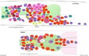

Figures
ExcFIG 1 - Schematic of the adult excretory system
ExcFIG 2 - Duct and pore

ExcFIG 3 - Excretory and gland cells
ExcFIG 4 - TEM of excretory, gland and duct cells
ExcFIG 5 - Development of excretory cell and canals
ExcFIG 6 - Development of the canals
ExcFIG 7A - Excretory canals
ExcFIG 7B&C - Excretory canal
ExcFIG 7D&E - Excretory canal
ExcFIG 8 - Secretory-excretory junction
ExcFIG 9 - Excretory pore cell and
duct cell

ExcFIG 10 - The G1 and G2 cell in
L1 larval stage
ExcMOVIE 1 - 3-D reconstruction
of excretory gland cells
SupFIG 1

SupFIG2
SupFIG 3